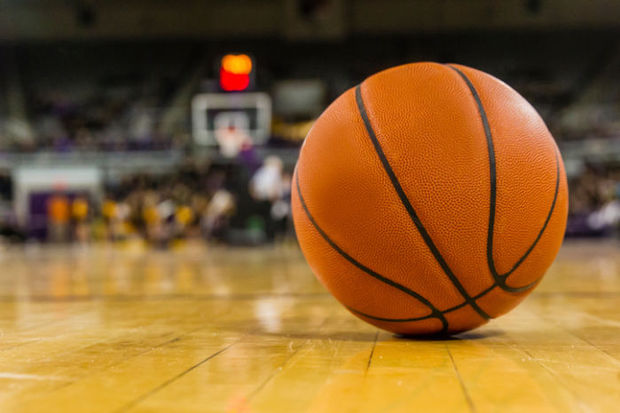

Hobbies are a huge part of my life. I really enjoy playing basketball anytime I have time for it. Basketball is a sport that I have a huge passion for and want to be around it for the rest of my life no matter what job path it is. I use to run cross country and track in high school where I found a love for running. I have always been a runner but now im trying to push my normal running for fun to running in some marathons and challenging myself. I would love to be able to run the Boston or New York marathon one day it would be a huge accomplishment. I also like to workout daily just to give me a boost of energy for the day. Working out is a solid foundation for any sport or activity so its a must for me. Lifting weights can strengthen any part of your body you want. Also watching sports would be considered a hobby because of how much time is dedicated to watch all the basketball, football, and soccer games.